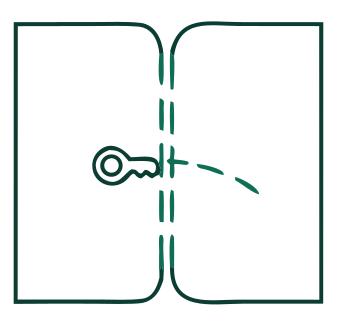

You said you like the visuals we have and that it needs the layout of a professional interface, like DigitalOcean. So the green header, the drawings and the green-and-white palette stay. What changes is the structure: a header, a summary table, labelled sections, banners and a footer bar, in a fixed order. Corners are 8px, as in a console, instead of pills; that is a one-line change back if you prefer pills. Sample data; nothing is built yet.
The green header and the drawing stay, but the name is a normal title with a subtitle, and everything under it follows one rhythm: a bordered summary table with the total on the last row, banners for what else is true, labelled sections with a line of help text, and a grey footer bar with the link on the left and the buttons on the right. No ticket, notches or floating stub.
Trade-off. Predictable and fast to scan, the way DigitalOcean's confirm and create dialogs are. It is narrow, so a long form scrolls, as new booking does.
Where it fits. Every dialog, from cancel to check-out. The skeleton is the same, only the sections differ.
Mei Lin · Unit 204
What the folio will hold once the nights below are charged.
Leaving 2 days early. The unused nights are not charged.
Kept with the check-out and the audit log.
Derya Polat · Unit 103 · from tonight

The stay, its folio and its price go with them.
108 · Standard double · FreeOptional. Kept on the booking's history and the audit log.
Unit 103 is marked for cleaning once they have moved. The booking has no price, so nothing changes there.
Amelia Taylor
The nights are freed and can be sold again. Cancelling charges and refunds nothing, and it cannot be taken back.
A wide dialog that does not scroll: a plain header, the work in the main column, and a tinted summary card carrying the drawing, the subject and the figures, with the total on its last row. The footer bar is shared.
Trade-off. The best for check-out, change booking and new booking, where the summary is real information. For small dialogs it would fall back to option I, so you would have two shapes.
Where it fits. Check out, change booking, change departure, new booking. Small confirms use option I.
Kept with the check-out and the audit log.
A check-out frees the room and cannot be taken back.
Optional. Kept on the booking's history and the audit log.